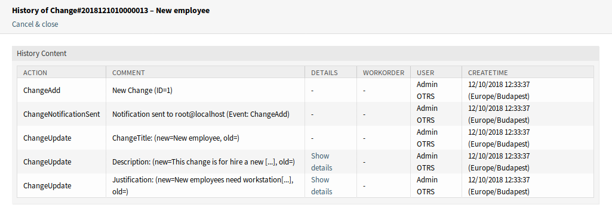
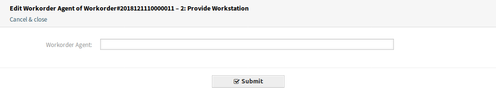
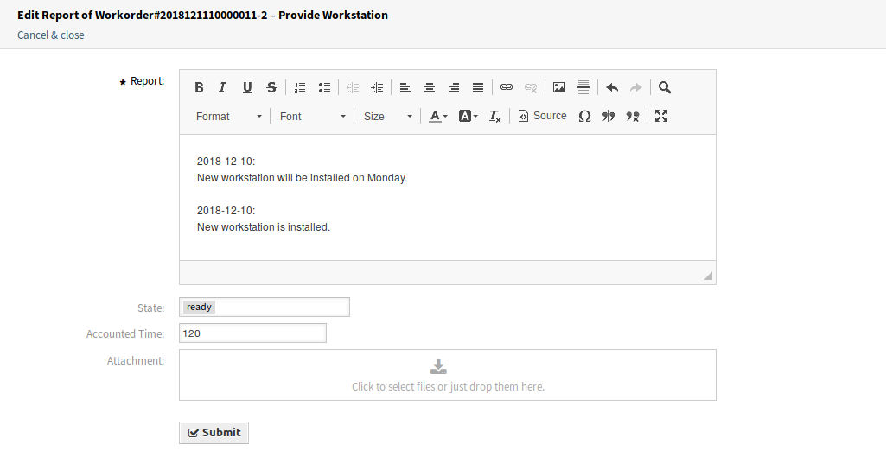
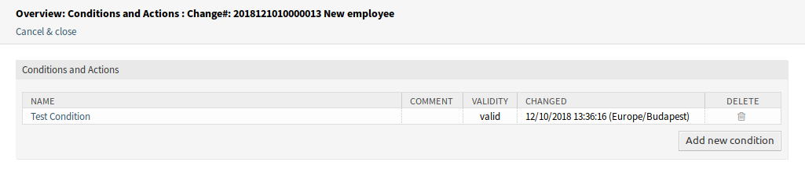

概览¶
此屏幕提供了变更的概览。

ITSM变更概览屏幕
可以通过单击概览小部件标题中的状态名称来过滤变更。 有一个选项 所有 来查看所有变更。状态名后面的数字表示每个状态的变更数量。
参见
请参阅设置 ITSMChange::Frontend::AgentITSMChange###Filter::ChangeStates 以定义将在概览中用作过滤器的工作指令状态。
若要限制每页显示的变更数量：
- 点击概览标题右上角的齿轮图标。
- 选择每页显示的最大变更数。
- 点击 提交 按钮。
可以通过系统配置定义显示的属性。 并非所有属性都默认显示。 可能的属性是：
ActualEndTime实际结束时间- 变更实施完成的日期和时间。
ActualStartTime实际开始时间- 开始实施变更的日期和时间。
Category类别- 变更的类别或类型。
ChangeBuilder变更创建人- 变更创建人的姓名。
ChangeManager变更经理- 变更经理的姓名。
ChangeNumber变更编号- 系统生成的变更编号。
ChangeState变更状态- 变更状态。
ChangeStateSignal变更状态信号- 变更状态的指示灯，显示为交通灯。
ChangeTime修改时间- 变更被修改的日期和时间。
ChangeTitle变更标题- 变更的名称。
CreateTime创建时间- 变更被创建的日期和时间。
DynamicField_ChangeFieldName动态字段_变更字段名- 与工作指令关联的动态字段。
Impact影响- 预期的变更效果。
PlannedEndTime计划结束时间- 预计变更实施完成日期和时间。
PlannedStartTime- 预计变更实施开始日期和时间。
Priority优先级- 此变更的优先级别。
RequestedTime请求时间- 客户期望的实施日期。
Services服务- 受此变更影响的服务。
WorkOrderCount工作指令数量- 与此变更相关的工作指令数量。
参见
请参阅设置 ITSMChange::Frontend::AgentITSMChange###ShowColumns 来定义显示的属性。
若要查看变更的详细信息：
- 点击一个变更行。

ITSM变更详情屏幕
变更详情 屏幕有自己的菜单。
- 后退
- 此菜单项返回上一屏幕。
- 历史
此菜单项打开一个新窗口以查看变更的历史记录。
ITSM变更历史屏幕
- 打印
- 此菜单项打开一个PDF文件，显示此屏幕适合打印机的版本。 您可以保存或打印此PDF文件。
- 编辑
此菜单项打开一个新窗口以编辑变更。

编辑ITSM变更屏幕
- 相关人员
使用此屏幕可将人员添加到变更中。

相关人员屏幕
- 变更经理 *
将变更经理权限分配给当前变更的一个服务人员。
注解
只有那些属于组 itsm-change-manager 的成员的服务人员可以添加为变更经理。
- 变更创建人 *
定义处理和定义当前变更的服务人员。 创建新变更时，将自动将当前服务人员作为变更创建人输入。
注解
只有那些属于组 itsm-change-bulder 的成员的服务人员可以添加为变更创建人。
- 变更咨询委员会
- 定义一组包括服务人员和客户联系人的人员。
- 添加工作指令
使用此窗口可以向变更添加新工作指令。

添加工作指令屏幕
添加或编辑此资源时，可以使用以下设置。 标有星号的字段是必填字段。
- 标题 *
- 此资源的名称。 可以在此字段中输入任何类型的字符，包括大写字母和空格。 名称将显示在概览表中。
- 说明 *
- 关于在这里做什么的工作指令的更长文本描述。
- 工作指令类型
- 选择工作指令的类型。 这些类型在 通用目录 中的类
ITSM::ChangeManagement::WorkOrder::Type中定义。 - 计划的开始时间
- 选择工作指令的计划开始时间。
- 计划结束时间
- 选择工作指令的计划结束时间。
- 计划用时
- 添加一个任何工时单位的值以指定计划的工作量。
- 附件
- 允许附加相关文件和文档。
添加工作指令后， 工作指令详情 屏幕将在新的浏览器选项卡中打开。

工作指令详情屏幕
The Work Order Zoom screen has an own menu.
- 后退
- 此菜单项返回上一屏幕。
- 历史
此菜单项打开一个新窗口以查看工作指令的历史记录。

工作指令历史屏幕
- 打印
- 此菜单项打开一个PDF文件，显示此屏幕适合打印机的版本。 您可以保存或打印此PDF文件。
- 编辑
此菜单项打开一个新窗口以编辑工作指令。

编辑工作指令屏幕
- 相应的移动工作指令
- 如果选中此选项，将根据 计划开始时间 和 计划结束时间 字段中设置的时间及时移动后续工作指令。
- 工作指令服务人员
使用此菜单项可将服务人员分配给该工作指令。
编辑工作指令服务人员屏幕
注解
只有那些属于组 itsm-change 的成员的服务人员可以添加为工作指令服务人员。
- 报告
使用此菜单项记录工作指令上的进度。 此屏幕可用作工作指令的日志。
工作指令报告屏幕
- 报告 *
- 这是报告的正文。 由于所有报告只有相同的文本区域，因此建议为每个条目添加时间戳。
- 状态
该工作指令的下一状态。
参见
可能的下一个状态在工作指令 状态机 中定义，但可以使用条件对它们进行过滤。
- 所用工时
- 以时间单位添加所用工时。
- 附件
- 允许附加相关文件和文档。
- 链接
此菜单项打开 OTRS 的标准链接屏幕。 工作指令可以链接到服务或工单。 现有链接也可以在这里管理。
链接工作指令屏幕
- 模板
使用此屏幕将工作指令保存为模板。

将工作指令保存为模板
- 模板名称 *
- 此资源的名称。 可以在此字段中输入任何类型的字符，包括大写字母和空格。 名称将显示在概览表中。
- 注释
向此资源添加其它信息。
注解
建议在此字段中添加版本号，以便更容易识别正确的模板。
- 重置状态
- 如果选择 是，则重置所有状态。
- 有效性
- 设置此资源的有效性。 如果此字段设置为 有效，则每个资源即可仅在 OTRS 中使用。 将此字段设置为 无效 或 临时无效 将禁止此资源的使用。
- 删除
使用此菜单项删除工作指令。

删除工作指令对话框
- 打印
- 此菜单项打开一个PDF文件，显示此屏幕适合打印机的版本。 您可以保存或打印此PDF文件。
- 编辑
此菜单项打开一个新窗口以编辑变更。
编辑ITSM变更屏幕
- 从模板添加工作指令
使用此屏幕从模板添加一个工作指令。

从模板添加工作指令屏幕
- 模板 *
- 从工作指令模板列表中选择一个工作指令模板。
- 时间类型
- 选择在下一个字段中要重新定义的时间类型。
- 新的时间
- 为上面选择的时间类型指定新时间。
参见
可以使用 工作指令详情 屏幕中的 模板 菜单项创建工作指令模板。
- 条件
使用此屏幕可以向变更添加新条件。
条件概览屏幕
注解
定义的条件不按特定顺序执行。
若要添加一个新条件：
- 点击 添加新条件 按钮。
若要编辑一个条件：
- 点击条件列表中的一个条件。
若要删除一个条件：
- 点击条件列表中的垃圾桶图标。
- 点击确认对话框中的 确认 按钮。
添加条件 和 编辑条件 屏幕由三个小部件组成。

添加条件屏幕
在 条件 小部件中：
- 名称 *
此资源的名称。 可以在此字段中输入任何类型的字符，包括大写字母和空格。 名称将显示在概览表中。
注解
条件按名称排序。 使用 100、200 等作为前缀来设置排序顺序。 无论其位置如何，都将评估所有条件。
- 匹配
- 匹配的表达式类型。
- 有效性
- 设置此资源的有效性。 如果此字段设置为 有效，则每个资源即可仅在 OTRS 中使用。 将此字段设置为 无效 或 临时无效 将禁止此资源的使用。
- 注释
- 向此资源添加其它信息。 为了更清晰，建议始终将此字段填充为带有完整句子的资源描述，因为注释也将显示在概览表中。
在 表达式 小部件中，可以添加表达式。可以在上面定义匹配类型的表达式（OR 或 AND）。
在 操作 小部件中，可以添加操作以在满足表达式时执行。 如果定义的条件为真，则运算符 set 允许将所选属性设置为特定值。 另一方面，只要定义的条件为真，操作符 lock 就冻结所选择的属性，即手动改变是不可能的。
注解
操作按设置的顺序进行处理。
- 链接
此菜单项打开 OTRS 的标准链接屏幕。变更可以链接到任何其他对象，如FAQ文章、服务、工单或配置项。也可以在此处管理现有链接。

链接ITSM变更屏幕
- 移动时间轴
使用此屏幕平移计划的变更实施时间范围。

移动时间轴屏幕
- 时间类型
- 选择在下一个字段中要重新定义的时间类型。
- 新的时间
- 为上面选择的时间类型指定新时间。
- 模板
使用此屏幕将变更保存为模板。 通过 从模板新建 菜单项可以从模板开始创建新的变更。
将变更保存为模板
- 模板名称 *
- 此资源的名称。 可以在此字段中输入任何类型的字符，包括大写字母和空格。 名称将显示在概览表中。
- 注释
向此资源添加其它信息。
注解
建议在此字段中添加版本号，以便更容易识别正确的模板。
- 重置状态
- 如果选择 是，则重置所有状态。
- 有效性
- 设置此资源的有效性。 如果此字段设置为 有效，则每个资源即可仅在 OTRS 中使用。 将此字段设置为 无效 或 临时无效 将禁止此资源的使用。